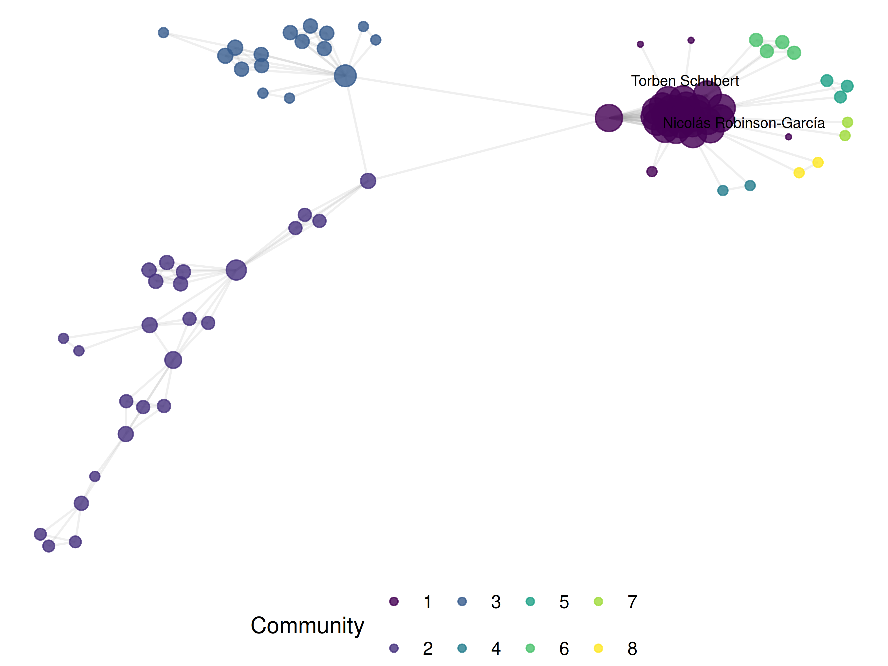
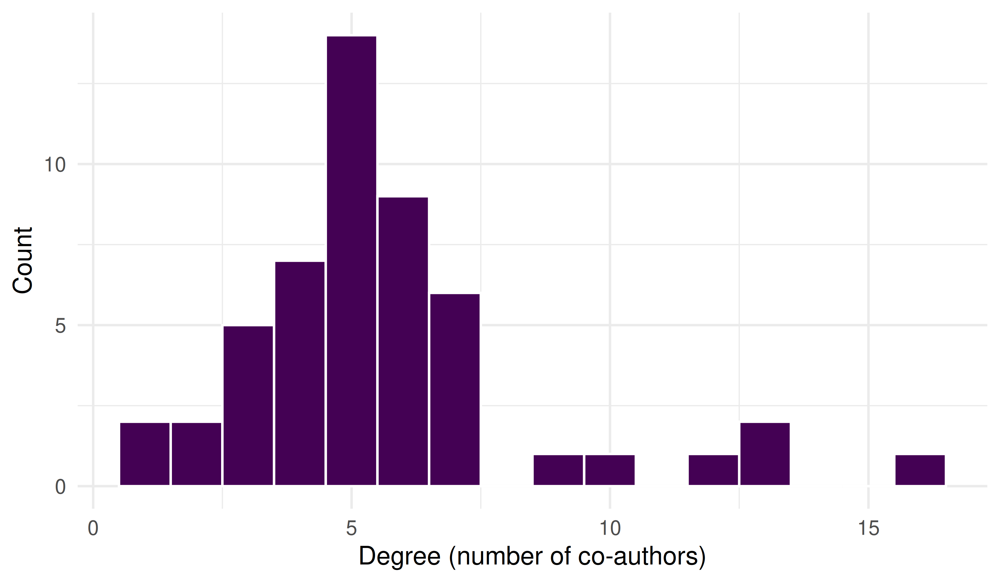

16 Co-authorship Networks
16.1 Learning objectives
After completing this chapter, you will be able to:
- Construct a co-authorship network from bibliographic data using
igraph - Compute and interpret node-level metrics: degree, betweenness centrality, and clustering coefficient
- Apply Louvain and Leiden community detection algorithms and compare results
- Produce deterministic network layouts that render identically in HTML and PDF
- Identify central authors and structural holes in a collaboration network
16.3 Conceptual background
Co-authorship is one of the most visible and well-studied forms of scientific collaboration. When two researchers appear together on a publication, they form a tie in the co-authorship network. Studying these networks reveals the social structure of science: who collaborates with whom, which groups are isolated, and which individuals serve as bridges between communities (Newman 2001).
Co-authorship networks are typically modelled as undirected, weighted graphs. Nodes represent authors, and an edge connects two authors who have co-authored at least one paper. Edge weights reflect the number of co-authored papers (or, alternatively, fractional counts inversely proportional to the number of authors per paper). These networks tend to exhibit properties common to social networks: a heavy-tailed degree distribution (most authors have few collaborators, a few have many), high clustering (collaborators of collaborators tend to collaborate), and a small-world structure (Barabási et al. 2002).
Community detection identifies groups of authors who collaborate more densely among themselves than with the rest of the network. The Louvain algorithm (Blondel et al. 2008) is fast and widely used; the Leiden algorithm (Traag et al. 2019) provides theoretical guarantees that all communities are well-connected, avoiding the “resolution limit” problem that can afflict Louvain.
Network analysis of co-authorship data has been widely applied to map research fields (Glänzel and Schubert 2004), identify key opinion leaders, assess interdisciplinary collaboration, and study the evolution of research communities over time. Fortunato (2010) provides a comprehensive review of community detection methods applicable to these networks.
16.4 Worked example
16.4.1 Acquiring co-authorship data
We fetch works from a journal and extract the author pairs.
works <- oa_fetch(
entity = "works",
primary_location.source.id = "S148561398",
from_publication_date = "2021-01-01",
to_publication_date = "2023-12-31",
options = list(sample = 300, seed = 42)
)
nrow(works)#> [1] 30016.4.2 Extracting author pairs
Each work has a list-column of authors. We unnest and build all pairwise co-author edges.
author_data <- works |>
select(id, authorships) |>
unnest(authorships, names_sep = "_") |>
select(work_id = id, author_id = authorships_id, author_name = authorships_display_name) |>
filter(!is.na(author_id))
edges <- author_data |>
inner_join(author_data, by = "work_id", suffix = c("_1", "_2"),
relationship = "many-to-many") |>
filter(author_id_1 < author_id_2) |>
count(author_id_1, author_id_2,
name_1 = author_name_1, name_2 = author_name_2,
name = "weight")
cat(glue("Authors: {n_distinct(c(edges$author_id_1, edges$author_id_2))}\n"))#> Authors: 784#> Edges: 181316.4.3 Building the network
g <- graph_from_data_frame(
edges |> select(author_id_1, author_id_2, weight),
directed = FALSE
)
g <- simplify(g, edge.attr.comb = list(weight = "sum"))
cat(glue("Nodes: {vcount(g)}, Edges: {ecount(g)}\n"))#> Nodes: 784, Edges: 1813#> Components: 188#> Density: 0.005916.4.4 Network metrics
V(g)$degree <- degree(g)
V(g)$betweenness <- betweenness(g, normalized = TRUE)
V(g)$clustering <- transitivity(g, type = "local")
author_lookup <- author_data |>
distinct(author_id, author_name)
metrics <- tibble(
author_id = V(g)$name,
degree = V(g)$degree,
betweenness = V(g)$betweenness,
clustering = V(g)$clustering
) |>
left_join(author_lookup, by = "author_id") |>
arrange(desc(degree))
metrics |>
head(10) |>
select(author_name, degree, betweenness, clustering)#> # A tibble: 10 × 4
#> author_name degree betweenness clustering
#> <chr> <dbl> <dbl> <dbl>
#> 1 Vincent Larivière 31 0.00149 0.708
#> 2 Rodrigo Costas 30 0.00233 0.749
#> 3 Loet Leydesdorff 30 0.00781 0.752
#> 4 Ludo Waltman 29 0.000902 0.808
#> 5 Isabella Peters 29 0.000902 0.808
#> 6 Mike Thelwall 28 0.000608 0.862
#> 7 Isidro F. Aguillo 26 0.000000126 1
#> 8 Zaida Chinchilla‐Rodríguez 26 0.000000126 1
#> 9 Ciriaco Andrea D’Angelo 26 0 1
#> 10 Juan Miguel Campanario 26 0.000000126 116.4.5 Community detection
We apply both Louvain and Leiden to the largest connected component.
comp <- components(g)
giant <- induced_subgraph(g, which(comp$membership == which.max(comp$csize)))
louvain <- cluster_louvain(giant)
V(giant)$community_louvain <- membership(louvain)
cat(glue("Louvain communities: {length(unique(membership(louvain)))}\n"))#> Louvain communities: 11#> Louvain modularity: 0.427
leiden_result <- cluster_leiden(giant, resolution_parameter = 1.0,
objective_function = "modularity")
V(giant)$community_leiden <- membership(leiden_result)
cat(glue("Leiden communities: {length(unique(membership(leiden_result)))}\n"))#> Leiden communities: 11#> Leiden modularity: 0.42716.4.6 Comparing community assignments
comparison <- tibble(
louvain = V(giant)$community_louvain,
leiden = V(giant)$community_leiden
)
nmi <- igraph::compare(
V(giant)$community_louvain,
V(giant)$community_leiden,
method = "nmi"
)
cat(glue("Normalized Mutual Information (Louvain vs Leiden): {round(nmi, 3)}\n"))#> Normalized Mutual Information (Louvain vs Leiden): 0.9416.4.7 Visualization
We use a Fruchterman-Reingold layout with a fixed seed for deterministic output.
giant_tidy <- as_tbl_graph(giant) |>
mutate(
community = as.factor(community_leiden),
label = ifelse(degree > quantile(degree, 0.95),
author_lookup$author_name[match(name, author_lookup$author_id)],
NA_character_)
)
set.seed(42)
layout <- create_layout(giant_tidy, layout = "fr")
ggraph(layout) +
geom_edge_link(alpha = 0.15, colour = "grey60") +
geom_node_point(aes(size = degree, colour = community), alpha = 0.8) +
geom_node_text(aes(label = label), repel = TRUE, size = 2.5,
max.overlaps = 15, na.rm = TRUE) +
scale_size_continuous(range = c(1, 6), guide = "none") +
scale_colour_manual(values = palette_sci(
n_distinct(giant_tidy |> pull(community), na.rm = TRUE)
)) +
labs(colour = "Community") +
theme_void(base_family = "sans", base_size = 11) +
theme(legend.position = "bottom")
Figure 16.1: Co-authorship network of sampled Scientometrics articles (2021–2023), coloured by Leiden community.
tibble(degree = degree(giant)) |>
ggplot(aes(x = degree)) +
geom_histogram(binwidth = 1, fill = palette_sci(1), colour = "white") +
labs(x = "Degree (number of co-authors)", y = "Count") +
theme_sci()
Figure 16.2: Degree distribution of the co-authorship network.
16.5 Diagnostics and interpretation
Key diagnostics for co-authorship networks:
- Giant component ratio: What fraction of nodes are in the largest connected component? A fragmented network may indicate a niche field or a sparse sample.
- Degree distribution: The heavy-tailed distribution is expected. A network where all nodes have similar degree may indicate a problem with the data (e.g., only single-author papers were excluded).
- Modularity: Values above 0.3 typically indicate meaningful community structure. Modularity near zero suggests the network has no clear communities.
- Comparison of algorithms: If Louvain and Leiden produce very different community counts, investigate the resolution parameter. High NMI (>0.8) indicates strong agreement.
giant_ratio <- vcount(giant) / vcount(g)
cat(glue("Giant component: {vcount(giant)}/{vcount(g)} nodes ({scales::percent(giant_ratio)})\n"))#> Giant component: 96/784 nodes (12%)#> Mean degree: 10.4#> Transitivity (global): 0.92516.7 Limitations and responsible use
- Co-authorship ≠ collaboration. Not all collaborations result in co-authored publications, and not all co-authorships reflect genuine intellectual contribution (honorary authorship).
- Name ambiguity. Author names in bibliographic databases are not unique identifiers. Despite OpenAlex’s entity resolution, errors persist — especially for common names and transliterated names. Always inspect suspicious high-degree nodes.
- Fractional vs. full counting. Our construction counts each co-authorship edge equally regardless of the number of authors on a paper. Fractional counting (weight = 1/(n-1) per edge) gives less weight to papers with many authors and may be more appropriate for some analyses (Glänzel and Schubert 2004).
- Temporal dynamics. Static networks aggregate all collaborations into a single snapshot. Consider building time-sliced networks to study how collaboration patterns evolve.
- Causality. Network position (e.g., high betweenness) does not imply leadership or influence. It is a structural observation, not an evaluative judgement (Hicks et al. 2015).
16.9 Common pitfalls
-
Non-deterministic layouts. Force-directed layouts (Fruchterman-Reingold, Kamada-Kawai) depend on a random seed. Always
set.seed()before computing the layout, or the figure will change on every render. - Including the full network. Very large networks are unreadable. Filter to the giant component, top-N nodes, or a specific community before plotting.
-
Ignoring multi-edges and self-loops.
igraph::simplify()is essential after constructing the graph from edge lists that may contain duplicate pairs. - Comparing modularity across networks of different sizes. Modularity is sensitive to network size and density. Use the Normalized Mutual Information (NMI) to compare community structures.
- Overinterpreting small components. A component with 2–3 authors who co-authored one paper is not a “community” — it is an artifact of the sample.
16.10 Exercises
Fractional counting. Modify the edge construction to use fractional counting (weight = 1/(k-1) where k is the number of authors on the paper). How do the top-degree authors change?
Temporal slicing. Split the corpus into yearly slices and build a separate network for each year. How does the number of components and mean degree evolve over time?
Betweenness vs. degree. Plot betweenness centrality against degree for the giant component. Are the highest-degree authors also the highest-betweenness authors? What does a high-betweenness, low-degree node represent?
Resolution parameter. Run Leiden community detection with resolution parameters of 0.5, 1.0, and 2.0. How does the number of communities change? Which resolution produces the most interpretable results?
16.11 Solutions
Solutions are provided in 2.11.
16.12 Further reading
- Newman (2001) — Foundational analysis of scientific collaboration networks.
- Barabási et al. (2002) — Evolution of co-authorship networks and their scale-free properties.
- Blondel et al. (2008) — The Louvain community detection algorithm.
- Traag et al. (2019) — The Leiden algorithm, with guarantees on well-connected communities.
- Fortunato (2010) — Comprehensive review of community detection in graphs.
- Glänzel and Schubert (2004) — Co-authorship analysis and fractional counting in bibliometrics.
16.13 Session info
#> R version 4.4.1 (2024-06-14)
#> Platform: x86_64-pc-linux-gnu
#> Running under: Ubuntu 24.04.4 LTS
#>
#> Matrix products: default
#> BLAS: /usr/lib/x86_64-linux-gnu/openblas-pthread/libblas.so.3
#> LAPACK: /usr/lib/x86_64-linux-gnu/openblas-pthread/libopenblasp-r0.3.26.so; LAPACK version 3.12.0
#>
#> locale:
#> [1] LC_CTYPE=C.UTF-8 LC_NUMERIC=C LC_TIME=C.UTF-8 LC_COLLATE=C.UTF-8 LC_MONETARY=C.UTF-8
#> [6] LC_MESSAGES=C.UTF-8 LC_PAPER=C.UTF-8 LC_NAME=C LC_ADDRESS=C LC_TELEPHONE=C
#> [11] LC_MEASUREMENT=C.UTF-8 LC_IDENTIFICATION=C
#>
#> time zone: UTC
#> tzcode source: system (glibc)
#>
#> attached base packages:
#> [1] stats graphics grDevices utils datasets methods base
#>
#> other attached packages:
#> [1] ggraph_2.2.2 tidygraph_1.3.1 igraph_2.3.1 quanteda_4.4 pdftools_3.8.0 arrow_24.0.0
#> [7] bibliometrix_5.3.0 RefManageR_1.4.0 bib2df_1.1.2.0 rcrossref_1.2.1 gt_1.3.0 tidytext_0.4.3
#> [13] glue_1.8.1 openalexR_3.0.1 lubridate_1.9.5 forcats_1.0.1 stringr_1.6.0 dplyr_1.2.1
#> [19] purrr_1.2.2 readr_2.2.0 tidyr_1.3.2 tibble_3.3.1 ggplot2_4.0.3 tidyverse_2.0.0
#>
#> loaded via a namespace (and not attached):
#> [1] bibtex_0.5.2 RColorBrewer_1.1-3 rstudioapi_0.18.0 jsonlite_2.0.0 magrittr_2.0.5
#> [6] farver_2.1.2 rmarkdown_2.31 fs_2.1.0 vctrs_0.7.3 memoise_2.0.1
#> [11] askpass_1.2.1 base64enc_0.1-6 htmltools_0.5.9 contentanalysis_1.0.0 curl_7.1.0
#> [16] janeaustenr_1.0.0 cellranger_1.1.0 sass_0.4.10 bslib_0.10.0 htmlwidgets_1.6.4
#> [21] tokenizers_0.3.0 plyr_1.8.9 httr2_1.2.2 plotly_4.12.0 cachem_1.1.0
#> [26] dimensionsR_0.0.3 mime_0.13 lifecycle_1.0.5 pkgconfig_2.0.3 Matrix_1.7-0
#> [31] R6_2.6.1 fastmap_1.2.0 shiny_1.13.0 digest_0.6.39 shinycssloaders_1.1.0
#> [36] rprojroot_2.1.1 SnowballC_0.7.1 labeling_0.4.3 urltools_1.7.3.1 timechange_0.4.0
#> [41] polyclip_1.10-7 httr_1.4.8 compiler_4.4.1 here_1.0.2 bit64_4.8.0
#> [46] withr_3.0.2 S7_0.2.2 backports_1.5.1 viridis_0.6.5 ggforce_0.5.0
#> [51] MASS_7.3-60.2 rappdirs_0.3.4 bibliometrixData_0.3.0 tools_4.4.1 otel_0.2.0
#> [56] stopwords_2.3 zip_2.3.3 httpuv_1.6.17 rentrez_1.2.4 promises_1.5.0
#> [61] grid_4.4.1 stringdist_0.9.17 generics_0.1.4 gtable_0.3.6 tzdb_0.5.0
#> [66] rscopus_0.9.0 ca_0.71.1 data.table_1.18.4 hms_1.1.4 xml2_1.5.2
#> [71] utf8_1.2.6 ggrepel_0.9.8 pillar_1.11.1 later_1.4.8 tweenr_2.0.3
#> [76] brand.yml_0.1.0 lattice_0.22-6 bit_4.6.0 tidyselect_1.2.1 miniUI_0.1.2
#> [81] downlit_0.4.5 knitr_1.51 gridExtra_2.3 bookdown_0.46 crul_1.6.0
#> [86] xfun_0.57 graphlayouts_1.2.3 DT_0.34.0 humaniformat_0.6.0 visNetwork_2.1.4
#> [91] stringi_1.8.7 lazyeval_0.2.3 qpdf_1.4.1 yaml_2.3.12 evaluate_1.0.5
#> [96] codetools_0.2-20 httpcode_0.3.0 cli_3.6.6 xtable_1.8-8 jquerylib_0.1.4
#> [101] dichromat_2.0-0.1 Rcpp_1.1.1-1.1 readxl_1.4.5 triebeard_0.4.1 XML_3.99-0.23
#> [106] parallel_4.4.1 assertthat_0.2.1 pubmedR_1.0.2 viridisLite_0.4.3 scales_1.4.0
#> [111] openxlsx_4.2.8.1 rlang_1.2.0 fastmatch_1.1-8